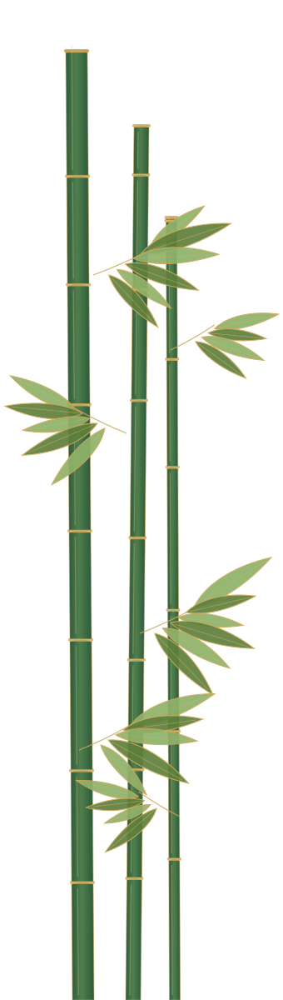
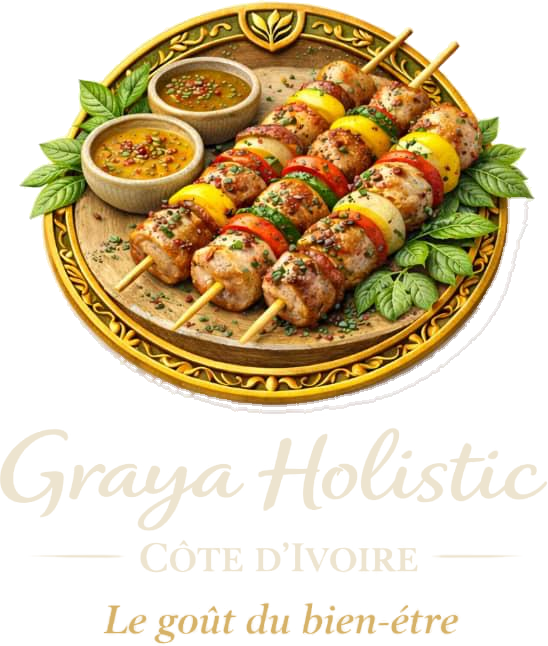
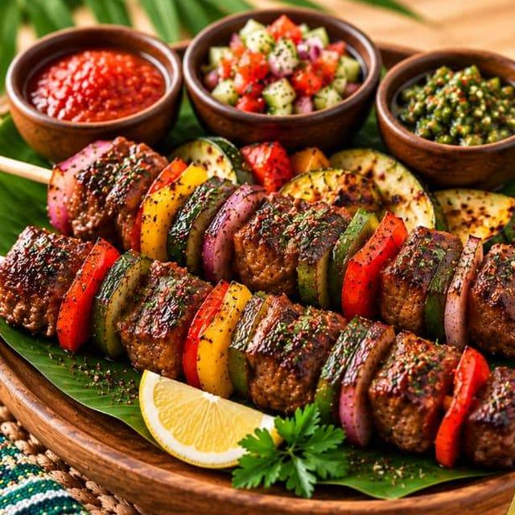
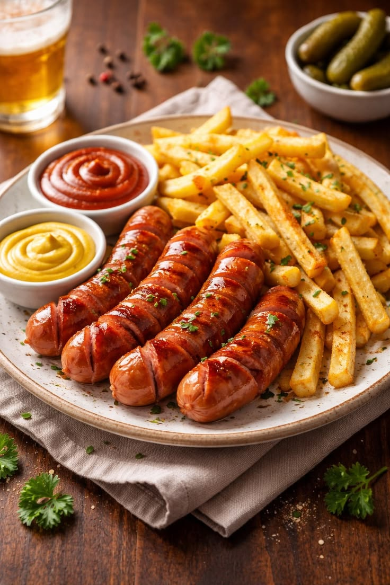
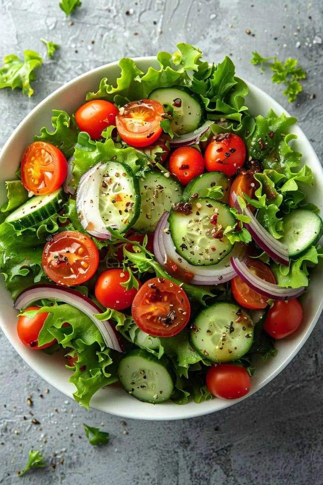

Kedjenou
La Légendaire
Poulet mijoté à l'ivoirienne, légumes et parfums authentiques.
3 000 FCFA


Une gastronomie qui nourrit le corps, apaise l'esprit et élève l'âme, avec des plantes et épices locales.
« Graya Holistic transforme l'alimentation en un acte de soin, de conscience et de dignité. »Une initiative pionnière en Côte d'Ivoire
Un héritage gastronomique transmis et réinventé, ancré dans la culture ivoirienne.
Des ingrédients du terroir choisis pour leurs vertus nutritives et thérapeutiques.
Le corps, l'esprit et l'émotion replacés au centre du repas.
La carte
Chaque création porte un nom et une histoire. Ajoutez-la au panier, choisissez votre zone : la commande part sur WhatsApp.
La Légendaire
Poulet mijoté à l'ivoirienne, légumes et parfums authentiques.
Réconfort ancestral
Carpe fraîche, écrevisses, aubergines, gombo et épices lagunaires.

Le bœuf du Sud
Filet de bœuf, poivrons, courgettes, épices douces inspirées du Sud.
Aloko
Bananes plantain mûres, caramélisées.
Notre approche
Cuisiner avec intention, conscience et énergie pour nourrir le corps et l'esprit.
L'assiette comme expérience sensorielle et émotionnelle, source d'apaisement.
Plantes médicinales et épices traditionnelles, choisies pour leurs vertus.
Des recettes pensées pour soutenir le bien-être et l'énergie positive.


Traiteur événementiel
Mariages, séminaires, anniversaires ou déjeuners d'équipe : nous composons avec vous un menu sur mesure, sain et généreux, livré le jour J.
En images
Saveurs, couleurs et gestes conscients, tels qu'ils sortent de notre cuisine.
Livraison
Notre cuisine est à Bingerville. Les frais dépendent de la distance et s'ajoutent automatiquement à votre panier.
Composez votre panier en deux minutes, ou écrivez-nous directement.